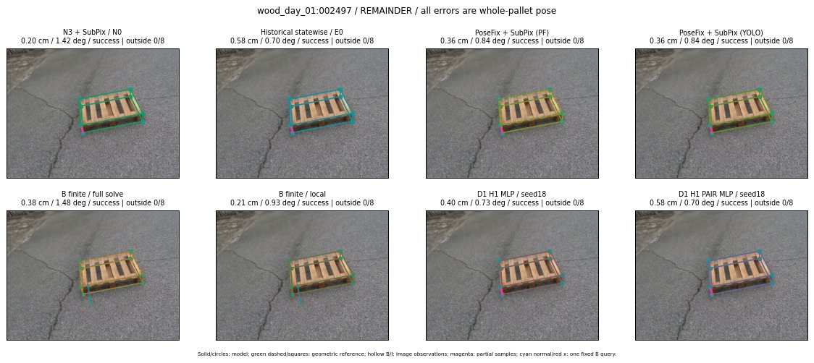

Whole-pallet pose errors; reference is a fixed geometric annotation, not certified physical GT.

Scores are uncalibrated logits. N0 retention is a numerical pose alias; it differs from H0 none or B fallback. B/I and profiles in baseline/B panels are original observations; L panels use new D1 observations. Only one deterministic supported B query is shown in a thumbnail; full support counts are below. Grey privacy rectangles edit the display copy only and are unrelated to O states; all observations were measured on original pixels. Thumbnails use JPEG quality85; detailed scientific panels are PNG.
| Method | Whole pose / cm, deg | Actual source | Selected ID | Score | Archived candidates | Eligible | N0 retained | H0 none | Fallback | Finite profiles |
|---|---|---|---|---|---|---|---|---|---|---|
| Raw YOLO + F | 0.63 cm / 0.71 deg / success | OTHER | None | N/A | N/A | N/A | False | N/A | None | N/A |
| N3 + SubPix / N0 | 0.20 cm / 1.42 deg / success | N0 | None | N/A | N/A | N/A | True | N/A | None | N/A |
| Historical statewise / E0 | 0.58 cm / 0.70 deg / success | E0_REGENERATED | None | N/A | N/A | N/A | False | N/A | False | N/A |
| PoseFix raw | 1.37 cm / 0.63 deg / success | OTHER | None | N/A | N/A | N/A | False | N/A | None | N/A |
| PoseFix + SubPix (PF) | 0.36 cm / 0.84 deg / success | OTHER | None | N/A | N/A | N/A | False | N/A | False | historical support records 9; finite audit N/A |
| PoseFix + SubPix (YOLO) | 0.36 cm / 0.84 deg / success | OTHER | None | N/A | N/A | N/A | False | N/A | False | historical support records 9; finite audit N/A |
| Historical L, seed18 | 0.42 cm / 1.49 deg / success | OTHER | NEW/AB/SWAPPED_WD/h3/G10/ORIGINAL_WD/sample/5/PROPOSED_NATIVE_YAW_3 | N/A | 59 | 59 | False | False | False | N/A |
| Historical B fixed bank | 0.40 cm / 0.73 deg / success | OTHER | G10/ORIGINAL_WD/sample/0 | N/A | N/A | N/A | False | N/A | False | N/A |
| Historical B full | 0.41 cm / 1.35 deg / success | OTHER | NEW/B/ORIGINAL_WD/h0/G13/ORIGINAL_WD/sample/0/PROPOSED_NATIVE_YAW_0 | N/A | N/A | N/A | False | N/A | False | N/A |
| Historical edge full | 4.24 cm / 21.41 deg / failure | OTHER | NEW/edge/ORIGINAL_WD/h0/G13/ORIGINAL_WD/sample/0/PROPOSED_NATIVE_YAW_0 | N/A | N/A | N/A | False | N/A | False | N/A |
| Historical AB full | 0.42 cm / 1.49 deg / success | OTHER | NEW/AB/SWAPPED_WD/h3/G10/ORIGINAL_WD/sample/5/PROPOSED_NATIVE_YAW_3 | N/A | N/A | N/A | False | N/A | False | N/A |
| B finite / fixed bank | 0.40 cm / 0.73 deg / success | OTHER | G10/ORIGINAL_WD/sample/0 | N/A | N/A | N/A | False | N/A | False | 35/35 |
| B finite / full solve | 0.38 cm / 1.48 deg / success | OTHER | NEW_FINITE/B/ORIGINAL_WD/h0/G13/ORIGINAL_WD/sample/0/PROPOSED_NATIVE_YAW_0 | N/A | N/A | N/A | False | N/A | False | 35/35 |
| B finite / local | 0.21 cm / 0.93 deg / success | OTHER | NEW_FINITE/B/ORIGINAL_WD/h0/N0_LOCAL_SAME_PHYSICAL_POSE/ORIGINAL_WD | N/A | N/A | N/A | False | N/A | False | 35/35 |
| Edge finite / full solve | 0.37 cm / 1.37 deg / success | OTHER | G10/ORIGINAL_WD/sample/1 | N/A | N/A | N/A | False | N/A | False | 35/35 |
| D0 H0 MLP / seed18 | 0.20 cm / 1.42 deg / success | N0 | N0 | 4.008622646331787 | 27 | 27 | True | True | True | N/A |
| D0 H0 MLP / seed19 | 0.20 cm / 1.42 deg / success | N0 | N0 | 4.624404430389404 | 27 | 27 | True | True | True | N/A |
| D0 H0 MLP / seed20 | 0.20 cm / 1.42 deg / success | N0 | N0 | 2.4664130210876465 | 27 | 27 | True | True | True | N/A |
| D0 H1 MLP / seed18 | 0.40 cm / 0.73 deg / success | OTHER | G10/ORIGINAL_WD/selected | 0.1613607406616211 | 27 | 27 | False | False | False | N/A |
| D0 H1 MLP / seed19 | 0.40 cm / 0.73 deg / success | OTHER | G10/ORIGINAL_WD/selected | -0.24152210354804993 | 27 | 27 | False | False | False | N/A |
| D0 H1 MLP / seed20 | 0.40 cm / 0.73 deg / success | OTHER | G10/ORIGINAL_WD/selected | -0.3742779493331909 | 27 | 27 | False | False | False | N/A |
| D1 H0 MLP / seed18 | 0.20 cm / 1.42 deg / success | N0 | N0 | 8.295178413391113 | 27 | 27 | True | True | True | N/A |
| D1 H0 MLP / seed19 | 0.20 cm / 1.42 deg / success | N0 | N0 | 8.426468849182129 | 27 | 27 | True | True | True | N/A |
| D1 H0 MLP / seed20 | 0.20 cm / 1.42 deg / success | N0 | N0 | 7.780646800994873 | 27 | 27 | True | True | True | N/A |
| D1 H1 MLP / seed18 | 0.40 cm / 0.73 deg / success | OTHER | G10/ORIGINAL_WD/selected | 0.6755844354629517 | 27 | 27 | False | False | False | N/A |
| D1 H1 MLP / seed19 | 0.40 cm / 0.73 deg / success | OTHER | G10/ORIGINAL_WD/selected | 0.6371143460273743 | 27 | 27 | False | False | False | N/A |
| D1 H1 MLP / seed20 | 0.40 cm / 0.73 deg / success | OTHER | G10/ORIGINAL_WD/selected | 0.08200305700302124 | 27 | 27 | False | False | False | N/A |
| D1 H1 ROLE AFFINE / seed18 | 0.40 cm / 0.73 deg / success | OTHER | G10/ORIGINAL_WD/selected | 0.8086965084075928 | 27 | 27 | False | False | False | N/A |
| D1 H1 ROLE AFFINE / seed19 | 0.40 cm / 0.73 deg / success | OTHER | G10/ORIGINAL_WD/selected | 0.026110097765922546 | 27 | 27 | False | False | False | N/A |
| D1 H1 ROLE AFFINE / seed20 | 0.40 cm / 0.73 deg / success | OTHER | G10/ORIGINAL_WD/selected | 0.6505190134048462 | 27 | 27 | False | False | False | N/A |
| D1 H1 PAIR MLP / seed18 | 0.58 cm / 0.70 deg / success | E0_REGENERATED | E0_REGENERATED | -0.6747153997421265 | 27 | 2 | False | False | False | N/A |
| D1 H1 PAIR MLP / seed19 | 0.20 cm / 1.42 deg / success | N0 | N0 | -0.4773450493812561 | 27 | 2 | True | False | False | N/A |
| D1 H1 PAIR MLP / seed20 | 0.58 cm / 0.70 deg / success | E0_REGENERATED | E0_REGENERATED | 0.025704972445964813 | 27 | 2 | False | False | False | N/A |
| D1 H1 PAIR ROLE AFFINE / seed18 | 0.58 cm / 0.70 deg / success | E0_REGENERATED | E0_REGENERATED | 0.12795071303844452 | 27 | 2 | False | False | False | N/A |
| D1 H1 PAIR ROLE AFFINE / seed19 | 0.58 cm / 0.70 deg / success | E0_REGENERATED | E0_REGENERATED | -0.04163752496242523 | 27 | 2 | False | False | False | N/A |
| D1 H1 PAIR ROLE AFFINE / seed20 | 0.58 cm / 0.70 deg / success | E0_REGENERATED | E0_REGENERATED | -0.0030453428626060486 | 27 | 2 | False | False | False | N/A |
| Regenerated common E0 | 0.58 cm / 0.70 deg / success | E0_REGENERATED | E0_REGENERATED | N/A | N/A | N/A | False | N/A | False | N/A |